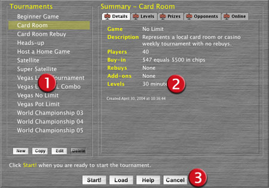

| Select a Tournament |
| When you click either of the Practice, Host
Online, or Poker Clock buttons, your next
step is to select a tournament. DD Poker allows you to play almost
any Texas Hold'em poker tournament, including a home game, a local card
room's weekly tournament or the World Championship event. Are you a beginner and not sure where to begin? See Help! I'm a beginner and just learning under the Practice help topic. |

This area displays all the DD Poker pre-defined tournaments, and all saved tournament formats you create.
|
|||||||||
|
|||||||||
Practice OR Poker Clock |
|
||||||||
Host Online |
|